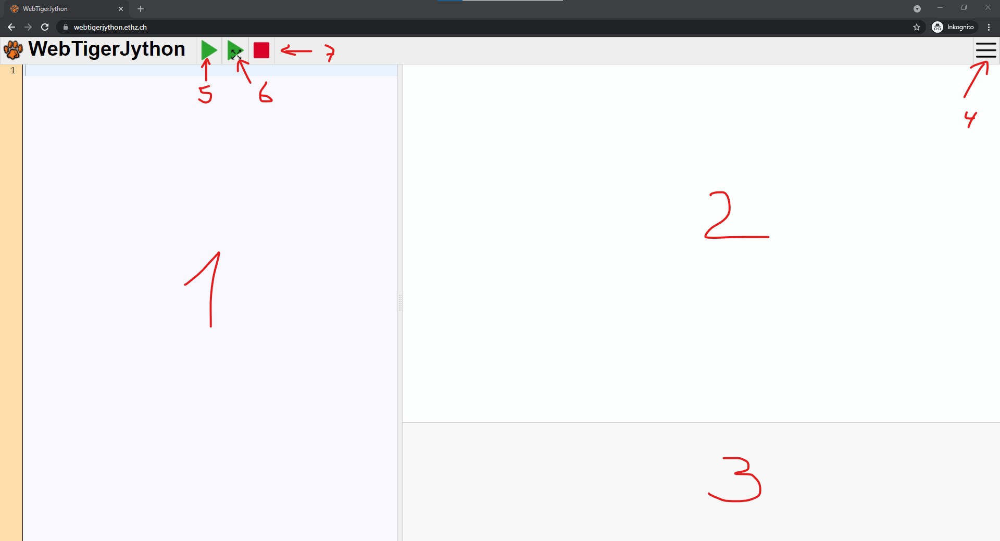
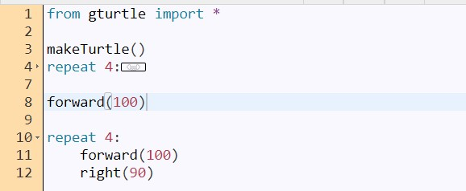
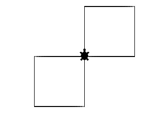
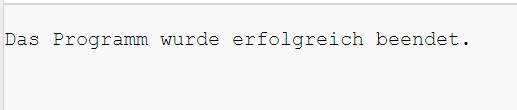
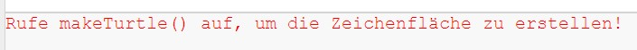
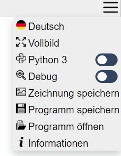

Nach dem Öffnen von WebTigerJython befindest du dich im sogenannten Editor. Ein Editor ist ein Programm in dem du Programmiercode schreiben kannst. Der WebTigerJython-Editor ist recht übersichtlich gestaltet. Die folgende Übersicht und die zugehörigen Erklärungen helfen dir, den Editor besser zu verstehen.

| Bereich Nr. | Name | Erklärung | Bild |
|---|---|---|---|
| 1 | Programmcode-Fenster | In diesem Bereich schreibst du deinen Programmcode. Am Beginn jeder Codezeile siehst du die Zeilennummer. Wenn du sehr viel Codezeilen schreibst, hast du an einigen Stellen die Möglichkeit über einen kleinen Pfeil an der Zeilennummer den Programmcode einzuklappen. Du siehst dies im Beispiel in Zeile 4 und 9. |  |
| 2 | Vorschau | In diesem Bereich wird der von dir geschriebene Programmcode dargestellt. Dein Code wird beim Starten des Programms automatisch vom Computer "umgerechnet", so dass aus den geschriebenen Codezeilen eine kleine malende Schildkröte wird. |  |
| 3 | Programm-Ausgabe | In diesem Fenster erscheinen verschiedene Meldungen, wenn du dein Programm ausführst. Wenn die Ausführung klappt wie geplant, dann erscheint eine Erfolgsmeldung in schwarzer Schriftfarbe. Wenn dein Programm aufgrund eines Fehlers nicht korrekt ausgeführt werden kann, dann erscheint hier eine entsprechende Fehlermeldung in roter Schrift. |
Erfolgsmeldung:  Fehlermeldung:  |
| 4 | Menü-Schaltfläche | Über diese Schaltfläche kannst du das Menü öffnen. Im Menü stehen dir verschiedene weitere Funktionalitäten zur Verfügung. So kannst du beispielsweise deine Zeichnung speichern und dein Programmspeichern, sowie ein gespeichertes Programm wieder öffnen. |  |
| 5 | Programmstart | Über diese Schaltfläche kannst du das von dir geschriebene Programm starten. Es wird dir dann im Vorschaufenster angezeigt. | |
| 6 | Programmstart im |
Über diese Schaltfläche kannst du ebenfalls das von dir geschriebene Programm starten. Im Unterschied zum "normalen" Programmstart wird jedoch dein Programm nicht im Vorschaufenster angezeigt, sondern in einem eigenen Fenster in voller Bildgröße. | |
| 7 | Programmstopop | Normalerweise wird dein Programm automatisch einmal ausgeführt und läuft bis zur letzten Codezeile durch. Wenn du aber ein sehr langes Programm geschrieben hast und dieses gern vorzeitig beenden möchtest, dann kannst du das über diese Schaltfläche tun. |